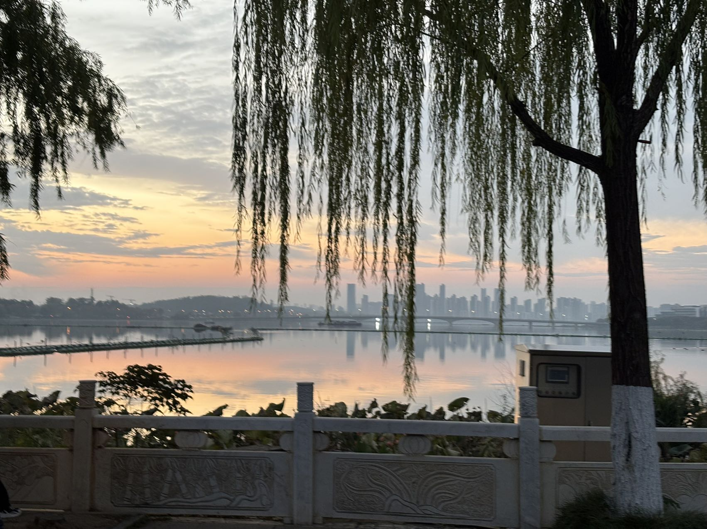
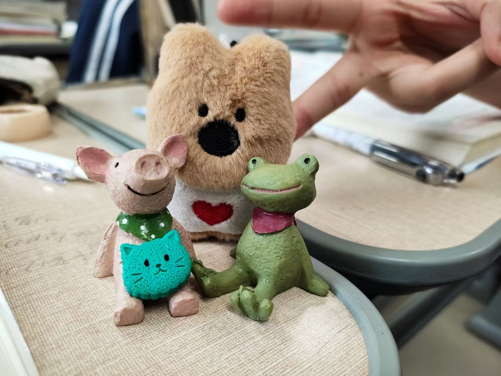
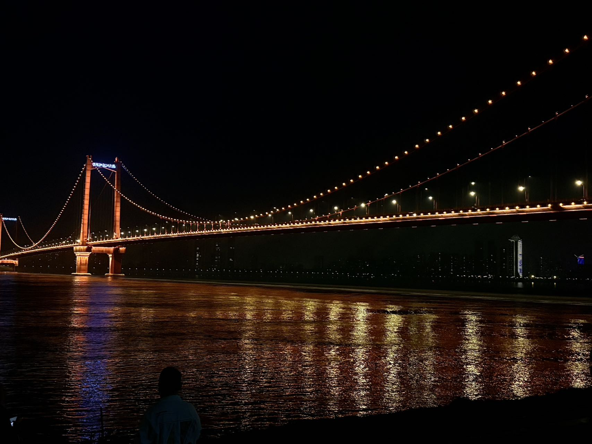

一些想说的心里话

关于远方
当新疆已经是白雪皑皑时，南湖旁边的树还倔强的不肯退去绿色。跨越了3600公里，悄然改变的不止气候，更加蕴藏着一份对远方的思念。报考志愿时毅然决然的没有填一个新疆的大学，当时想的就是一定要离开新疆，离开西北。想要去很远的地方，去父母管不到的地方，去有很多地铁线路的地方，去可以做到高铁的地方。于是当飞机从天山国际机场起飞的时候，我可以带走的只有我的眼泪。尽管现在交通如此发达，我可以坐火车，坐飞机，高铁转高铁，高铁转火车，可是新疆那么远，中国又那么大，想家的时候也不能立马就回去呀。去年中秋的时候，看到很多初高中同学都在晒月亮“每逢佳节倍思亲”原来，不止我一个人离开了新疆，也不止我一个在想家。

关于过去
"我们不要聊什么 综测 学分 绩点 奖学金 志愿时常 平时分了，一起回到68中门口吃阿殝吧“高三那年学校管的不是很严，中午的时候也放开可以去校外吃午饭。我和我的朋友经常去校外改善伙食，回来的时候再带一杯奶茶。虽然因为这个牺牲了午休时间，但是久违的可以踏出校园还是让人感受到自由的气息。当时我的同桌总会买很多稀奇古怪的小玩意待到学校来，她有一只小猪叫做“朱坚强”，不过后来朱坚强被她摔倒地上没有了一只耳朵。我们会在晚自习的时候聊天，聊毕业后要干什么，聊以后有了很多很多钱要干什么，我们传纸条玩歌词接龙，一起坐在教室最后一排画画，聊别人的八卦。这是高中时候最美好的记忆。可惜的是，我们现在已经不怎么联系了，我也好久好久没有见到她。只有在抖音才知道她最近怎么样，干了什么，还有没有在打游戏。想你。

关于现在
在上大学之前我从来没有来过武汉，一切对我来说都是陌生的。武汉的电动车很多，横冲直撞，武汉的车右转从来不会让人，武汉的方言也不太能听得懂。武汉和乌鲁木齐十分不一样，在武汉最喜欢的事情就是做公交车去吃盛香亭，从南湖大道茶山刘上车，在武珞路傅家坡换乘，701经过长江大桥，江汉桥。最后在武胜路江汉桥下车，对面就算凯德武胜。经过我的测评这家盛香亭虽然比较远，但是味道是最好吃的，菜补的也很快。光谷悦心汇相比就很不好了。回来的时候坐在靠近右侧的位置，是鹦鹉洲长江大桥，在夜色里红色起伏着，像长江水。